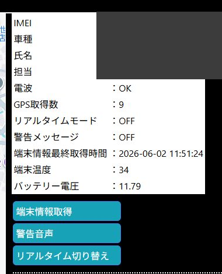

単元22
成約処理と納車チームへの引継ぎ
この単元のゴール案
成約処理をして納車チームに引き継げる
含む内容：6-1 全体の段取り、11/3会議で決まったこと、成約処理の流れ
この単元の詳しいマニュアルは作成予定です（サンプルは単元9・13・20）。
6-1-1骨子（10/20・10/21の打ち合わせより）
- 6-1-1-1
オークションやネクステージ在庫で仕入れた車を陸送し、整備工場に入れる。入庫後のやり取りと段取り
- 6-1-1-2
陸送、着金確認、整備工場への依頼、スプレッドシート、作業依頼書、進捗確認
- 6-1-1-3
TCSの取り付け依頼・動作確認 図6-A

図6-ATCSの管理画面（端末情報・エンジン切り替え）
6-1-211/3会議で決まったこと
- 6-1-2-1
整備工場への指示書と資料の番号を、完全に紐付ける
- 6-1-2-2
社内連絡はChatworkに統一する
- 6-1-2-3
渡部社長のポイント
経験がものを言う場面は上長が対応し、新人は「お願いします」で任せるのではなく、上長がやる姿を見て覚えるルーティンにする。上長は将来自分が楽になるために、面倒でも教える
- 6-1-2-4
部品の種類ごとの推奨発注先リストを入れる（例：ハイブリッドバッテリーはグループ会社で安く手配できる）。石丸さん・高橋で作る
- 6-1-2-5
トラブル時のフローチャートを作る
6-1-4成約処理と納車チームへの引継ぎ
- 6-1-4-1
アポインター・クローザーの仕事は、引継ぎ前の準備を終え、成約の翌日までに引継ぎ書を納車チームへ渡したところで終わる。この先（書類郵送・車庫・整備・登録・納車・入金）は8課の納車チームが担当する
- 6-1-4-2
引継ぎの前に必ず終わらせること（ネクストの業務マニュアル「成約後の引継ぎの流れ」より）
- 本申込を完了させる（プレミアは本申込が終わらないと契約書がダウンロードできない。必ずダウンロードできる状態にしてから渡す）
- お客様に「ご納車までのご案内」のLINEを追加してもらう
- LINEのお客様名を「お客様名/信販会社/担当名」に変える
- リローンの場合は、確認電話の説明と、口座登録・LINE登録のURL案内をクローザーが行う
- 納車進捗のスプレッドシートを入力する
- 6-1-4-3
引継ぎ書を渡す
- 成約の翌日までに、Chatworkで納車チームの担当者をメンションして送る
- お客様名・車種・車台番号を付ける。PDFのタイトルにもお客様名を必ず入れる
- 空白や間違いがないか確認してから送る
- 部品の発注がある場合は、引継ぎ書と進捗シートに書いたうえで担当者に直接依頼する
- 6-1-4-4
引継ぎ書に入れる項目
- 成約日、お客様名、都道府県、車種、車台番号、信販会社
- お客様との約束事・特記事項（タイヤ、傷の扱い、納期、書類の提出期限、駐車場の状況）
- 商談で聞いた成約後の項目（納車先、名義人、任意保険、下取り、給料日など。4章）
- 故障保証のプランと期間
- 説明済みの項目（4章「お客様に必ず説明すること」のチェック）
- 6-1-4-5
成約時のお金まわりの作業は8章（マネーチャート）のとおり
- 6-1-4-6
引継ぎ後もやること
- 書類の郵送・催促は納車チームが行う。何度連絡してもつながらないお客様は、クローザーからもプッシュする
- 対応が難しいお客様は納車チームからクローザーに依頼が来る。納車チームからのLINE・チャットは常に気にしておく
教育担当者のチェック
押すと印が付きます。この端末のブラウザにだけ保存されます。正式な記録は印刷したチェックリストに書いてください。